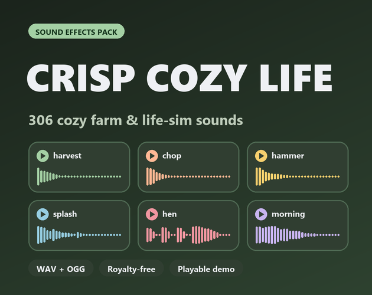

Crisp Cozy Life: 306 cozy farming and life-sim sound effects
Crisp Cozy Life is a pack of 306 cozy gameplay sound effects for farming games, life sims, cooking and crafting games: the sounds of doing things, not of pressing buttons. They are stylised, synthesised sounds (soft, warm, a little cartoon-like), not field recordings. Every sound comes as WAV and OGG, is loudness-matched and is royalty-free for commercial use.

- Contents
- 306 sounds in 8 folders
- Formats
- WAV (44.1 kHz, 16-bit, stereo) and OGG Vorbis
- Price
- $4.99 on itch.io (anipixels.itch.io/crisp-cozy-life)
- Free sampler
- 20 sounds, free on itch.io (anipixels.itch.io/crisp-cozy-life-free)
- Licence
- Royalty-free for commercial and non-commercial projects, no credit required, no reselling or redistribution of the files
- Made by
- Anipixels, with procedural code written with an AI assistant (Claude)
What is included
- Farming (47) - hoe into soil, shovel digs, planting a seed, scattered seeds, watering-can pours and a can filling up, harvest plucks, a five-step crop-pop ladder, sprout / growing / grown, hay rustles, scythe swishes, fertiliser, pulling weeds
- Cooking (49) - knife chops and fast chopping runs, three seamless sizzle loops, food hitting the pan, stirring, whisking, pouring, two seamless boil loops and single bubbles, plates set down, pot lid, oven dings, egg crack, salt, bites, a sip, 'dish done' jingles
- Crafting (39) - wooden hammer taps, a nail ladder that rises as it goes in, saw push / pull, sanding, stitches, scissors, anvil, parts set on the bench, brush strokes, rope creaks, craft-complete chimes in three sizes, a gentle fail, tool upgrade
- Fishing (31) - casts, bobber plops, single reel clicks and reel-in runs, splashes from pebble to big fish, bites, fish flops, line creak and snap, catch jingles in three sizes, two seamless pond loops
- Animals (41) - cartoon voices made in code: chick, hen, rooster, cow, sheep, pig, duck, cat meows and two seamless purr loops, dog, bird tweets, owl, frog, bumblebee, plus happy-pet jingles, eating and feed scattering
- Gathering (40) - a five-step pickup ladder, items dropped in a bag, coins and a coin pouch, axe chops and a falling tree, pickaxe taps and breaking rock, bush rustles, berries, mushrooms, finding a gem
- Home and Shop (42) - doors opening and closing, knocks, the bell over the shop door, register dings, buy and sell, footsteps on wood, grass, dirt and stone, drawer, chest, sweeping, flopping into bed, seamless fireplace and rain-on-the-roof loops
- Day Cycle (17) - short stingers: morning, evening, bedtime, level up, quest done, item get, new season, friendship up, festival, a letter arriving, end of day
Details
- 306 sounds in 8 folders (112 named sounds; 288 of the files belong to numbered sets, which are variations or tuned steps).
- 3.9 minutes of audio in total; 184 of the 295 one-shots are 0.6 s or shorter, and the longest jingle is 2.3 s.
- 11 seamless loops (2.4 to 3.6 s): sizzle, boil, cat purr, pond, fireplace and rain, marked _loop in the file name.
- Download size: 35 MB (one zip with both formats; 42 MB of WAV and 3.6 MB of OGG unzipped).
- Anything heard often has 2 to 6 variations; footsteps, rustles and sweeping are mixed quiet, because they play constantly.
- Ladders: crop_pop_01 to 05 and pick_up_01 to 05 climb a scale, hammer_nail_01 to 04 rise as the nail goes in, crop_grow_01 to 03 are sprout / growing / grown, and splash_01 to 04 go from pebble to big fish.
- Jingles, coins, bells and pickups are tuned to C major pentatonic, so they stay in tune with each other and with the other Crisp packs.
- All 306 sounds are also included, unchanged, in Crisp Cozy 2.0, which adds the interface sounds and 1,057 more; both share the same loudness and key.
Formats and engines
- WAV: 44.1 kHz, 16-bit, stereo (for editing and highest quality).
- OGG Vorbis: small files, ready for Godot, Unity, GameMaker and web.
- Every sound is loudness-matched, starts on its first sample (no dead air) and peaks at or below -1 dBFS.
Works with: Godot, Unity, Unreal, GameMaker, Construct, RPG Maker, Ren'Py, Phaser and other web frameworks: anything that plays WAV or OGG.
Free sampler
The free sampler has 20 of the 306 sounds as WAV and OGG: 5 farming sounds, 3 cooking sounds (one of them a sizzle loop), 1 crafting sound, 3 fishing sounds, 2 animal calls, 3 gathering sounds, 2 home and shop sounds and 1 day-cycle stinger.
The free itch.io page also hosts the playable browser demo of the full pack.
Licence
Use the sounds in any number of commercial or non-commercial projects (games, apps, websites, videos, streams, game jams). Edit, layer, pitch or otherwise modify them. Credit is appreciated but never required. You may not resell, redistribute or give away the sounds themselves, on their own or as part of another sound library or asset pack, modified or not, and you may not claim them as your own original work in a sound library.
This is a summary of the LICENSE.txt inside the download. The sampler's copy of that file: crisp-cozy-life.txt.
Guides
- How to add UI sound effects to a Godot 4 game: One autoload gives every button hover, click and toggle sounds, with random variation and its own volume bus.
Questions
Can I use this in a commercial game?
Yes. One purchase covers unlimited commercial and non-commercial projects.
Do I have to credit you?
No. A credit to Anipixels is welcome but not required.
Which engines does it work with?
Any engine or tool that plays WAV or OGG files: Godot, Unity, Unreal, GameMaker, Construct, RPG Maker, Ren'Py, Phaser and other web frameworks.
Are these real recordings?
No. Every sound is synthesised, so they are stylised: soft, clean and a little cartoon-like. If your game needs realistic field recordings of a farm, this is not that pack. Listen to the demo first.
How is Crisp Cozy Life different from Crisp Cozy?
Since version 2.0 (26 October 2026), Crisp Cozy contains all 306 Crisp Cozy Life sounds unchanged, plus 1,057 more: the interface sounds, cozy home, cafe, dialogue voices, footsteps, weather, seasons, magic, critters, seaside, festival and ambience loops. Crisp Cozy Life on its own is the smaller gameplay set: tools, kitchen, workshop, pond, animals, footsteps.
How do the loops work?
The 11 files with _loop in the name start and end at the same point, so they repeat without a gap or click. Set them to loop in your engine.
Was AI used?
Yes, for the code. Every sound is synthesised from scratch by code that was written with Claude (an AI assistant). No recorded samples and no AI audio-generation models were used.
Can I try before buying?
Yes. The web demo on the free itch.io page plays all 306 sounds in your browser, and the free sampler has 20 of them to download. The 20 sampler sounds can also be played on this site's UI sound board.
Screenshots


How it was made
Every sound is synthesised from scratch by code that was written with Claude, an AI assistant. No recorded samples and no AI audio-generation models were used.
Crisp Cozy Life is part of the Crisp Everything Bundle: all 14 Crisp packs for $19.99 instead of $81.86 bought one by one. View the bundle on itch.io